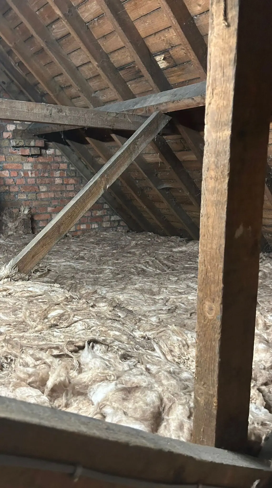
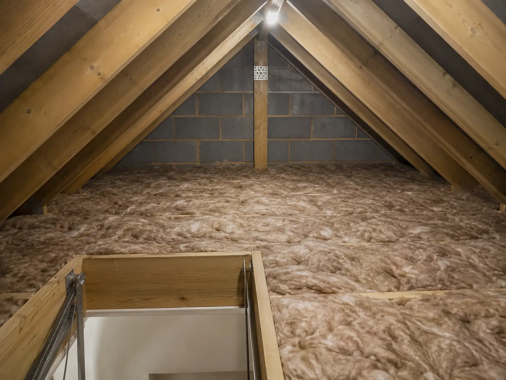

Attic Insulation In Brentwood
Experienced Insulation Installers Helping Brentwood Homes Stay Warmer and Cut Energy Bills
Experienced Insulation Installers Helping Brentwood Homes Stay Warmer and Cut Energy Bills


Here at Brentwood Loft insulation installers our team with over 11 years of unparalleled experience in attics
specialise in loft insulation services from full insulation installation
to removal of old insulation across Brentwood. We use high-performance modern insulation materials that all meet current UK building standards.
Many old built 1930s properties in Brentwood still have 100mm loft insulation which is way out of date compared to the 2026 270mm UK standard, for these types of properties we usually use top-up insulation methods.
We provide complete long-term solutions to all Brentwood homeowners whether you want to keep your home warmer or
to improve your homes EPC rating and cut energy costs.

The way we install loft insulation depends on what is already in the loft, the condition of the existing insulation and how the space needs to be used. We regularly work on older Brentwood lofts where the existing material has been compressed, moved around or simply isn't deep enough.
For standard loft floors, we normally install insulation between and across the joists to build the overall depth up correctly. Where existing insulation is still usable, we can often work over it rather than removing perfectly serviceable material. We also take care around eaves and ventilation points so insulation isn't pushed into areas where airflow needs to be maintained.
Every loft is slightly different, so we look at the actual space before deciding on the installation approach. The aim is straightforward: even coverage, the correct depth and a properly finished loft rather than simply putting insulation down as quickly as possible.
We’ve been installing loft insulation for over 11 years, working across Brentwood properties with different loft layouts and access conditions.
We use established insulation materials suited to loft applications and installed to the required depth with consistent coverage across the lofts floor.
We install with the long term in mind, keeping insulation evenly
distributed and allowing for ventilation where required.
This ensures the insulation
continues performing properly long term.


Every project starts with understanding your current loft insulation. We look at insulation depth, airflow and the overall condition of the attic space to understand what your Brentwood property currently has in place.
Once we understand the loft layout, we create a clear installation approach. This may involve topping up insulation to the recommended 270mm depth or improving coverage where insulation has become uneven.
Loft insulation is installed evenly across the loft floor with attention given to corners, eaves and ventilation areas. The goal is consistent insulation coverage that improves comfort and heat retention throughout the property.




Proper loft insulation helps your Brentwood home hold onto heat for longer, reducing the amount of warmth escaping through the roof. This can also contribute to a better EPC rating where loft insulation is currently below the required level.
When we install it, we make sure coverage is consistent across the loft while keeping ventilation at the eaves clear. We also work around joists, pipes and access areas rather than leaving obvious gaps in the insulation.
We had the loft insulation completely replaced and the difference was noticeable straight away. The team explained what they were doing and left the loft clean afterwards.
Our existing insulation had become quite uneven so we had it topped up. They assessed everything before the work started and the installation was completed without any fuss.
We needed the old loft insulation removed and replaced. The work was carried out carefully and the new insulation was installed evenly across the loft.
Good service from start to finish. They looked at the existing insulation first, explained what needed doing and completed the top up as agreed.
We had new insulation installed throughout the loft. The team worked efficiently and made sure the insulation was properly covered without blocking the ventilation in the loft.
Current UK guidance recommends around 270mm of loft insulation. However a-lot of older properties in CM13, CM14 and CM15 still have 100mm or less, which can result in heat escaping through the attic.
Eligibility for government loft insulation grants depends on household income, benefits received and your property's current energy efficiency rating. Some Brentwood homeowners may qualify under schemes like ECO, but availability and criteria can change. We recommend checking current guidance or discussing your situation during an assessment to see what support may be available.
you can see if your eligible for a Brentwood loft insulation grant here: Brentwood Council Government Grants
Yes, properly installed attic insulation can positively impact your EPC rating by reducing heat loss and improving overall energy efficiency, especially in older Brentwood homes.
Most standard loft insulation installations in Brentwood can be completed within a day, depending on loft size, accessibility and whether removal or top-up insulation is required.
This depends on your existing insulation depth, roof structure and available space. Mineral wool is commonly used for standard lofts, while rigid PIR boards may be suitable where headroom is limited.